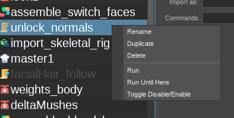
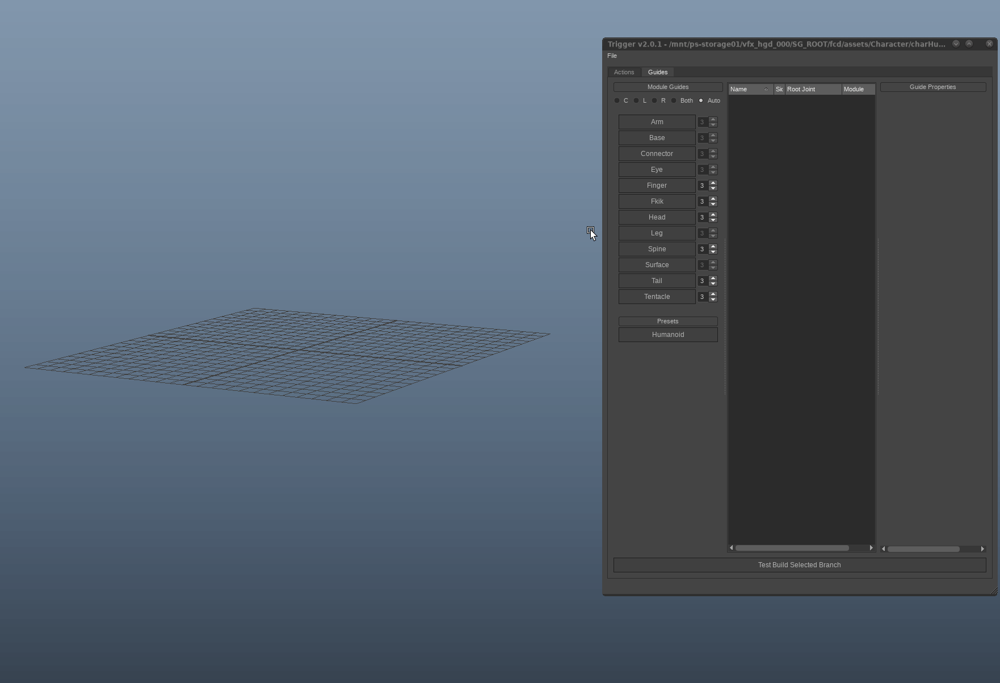
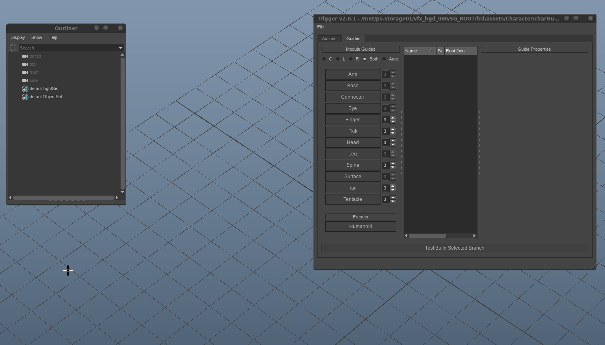

Interface
Trigger UI contains two main tabs
Actions Tab
Actions tab is the most important part of the UI and pretty much everything is happening in this section.

2. Actions list
List of available actions in the current Trigger Session Right click any action will display the following menu:
Rename: pops up a edit dialog to rename the current action
Duplicate: Duplicates the selected action to below
Delete: Removes the selected action
Run: Runs only the selected action. Does not reset the scene
Run Until Here: Starts running the actions from the begining of list and stops on selected action
Toggle Disable/Enable: Enables or disables selected action. Disables actions displayed as grayed out
3. Settings Panel
Displays settings for selected action. There are detailed eplanations for each action in Actions section
Guides Tab
Guides section is more similar to traditional modular rigging tools. In guides section, we will be creating the ‘Guide Joints’ which will work with ‘Kinematics’ action in Actions panel.
Unlike Actions panels, joints created in Guides section is not going to be saved with trigger session. This panel is only for manipulating maya joints and adding them the correct attributes which will be used by trigger when creating the actual rig.
The guides must exported in order to be used in Kinematic actions. The guides created from this section can be exported using File => Export guides menu item.
Tip
Guides can be exported to be used in Kinematics action from File -> Export Guides menu
1. Alignment Panel
Defines the alignment of the next limb module that will be created
C: Centered. The modules created with Center alignment are yellow and does not have a mirrored pair
L: Left. Left modules are indicated with blue color and represents the left side of the character/rig.
R: Right. Right modules are red and represents the right side of the character/rig
Both: Creates both Left and Right Modules at the same time and dynamically mirror links them together. In mirrored pairs Right sided (Red) modules cannot be manipulated and always mirror the Left side
Auto: This option is useful if you want to create paired limbs which does not share the same parent. For example, Right and Left thumbs of a character should be mirrored but they dont getting mirrored using the same joint as center. When Auto, trigger tries to find the corresponding parent pair joint instead of creating both limbs connected into the same joint.
2. Modules List
This area contains all available limb modules in Trigger & pre-defined presets (Essentially, collection of modules with a hierarchy)
The numbers next to the modules means that how many joints will be drawn with that module. If the numbers are disabled and not editable, that means that module can only be created with fixed number of joints. For example, the Arm module can only have 4 guide joints defining shoulder, upper arm, elbow and hand
Warning
The guide joints drawn into viewport is not going to be saved with the Trigger session! You need to export your guides to a .trg file from File -> Export Guides
Guide Creation
- Normal Mode
When clicked each module button, the corresponding limb will be created using the selected joint in the scene as parent. If nothing selected, the limb (or limb pairs) will be created on their default locations. Depending on the set alignment the pairs will be created automatically

- Define Mode
Holding down Ctrl when the trigger window is activated will turn the outlines of the module buttons to green, activating ‘Define’ mode. In define mode, you can convert any joint hierarchy into Trigger guides.

3. Guides List
List of guides available in the Scene. Please note that, the export guides command will export all these guides listed in this list.
4. Guide Properties
Guide properties have some shared properties for each guide and some other properties unique to each module. More detail on modules section.
Common properties are:
Module Name: name of the selected module. Although it is not mandatory, it is advised to provide a unique name for each module in the hierarchy
Up Axis: Defines the up-axis of the module. Default is +Y
Mirror Axis: defines in which axis the module will be mirrored. Default +X
Look Axis: Modules facing direction. Default +Z
Inherit Orientation: If this is checked, Trigger will assume the existing orientation of the guide joint as correct. Otherwise the orientations will be calculated automatically and only positional values will inherited. This is especially important for the modules using IK chains.
Although these values are common for all modules, some or all may not be affecting anything depending on the complexity of the module